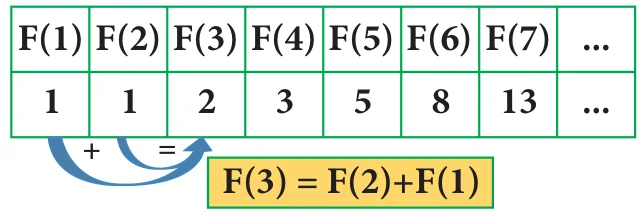
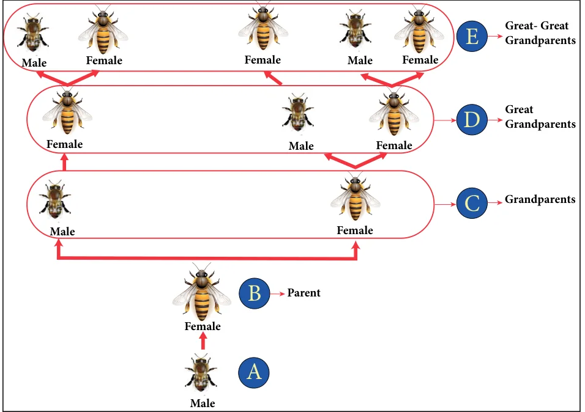
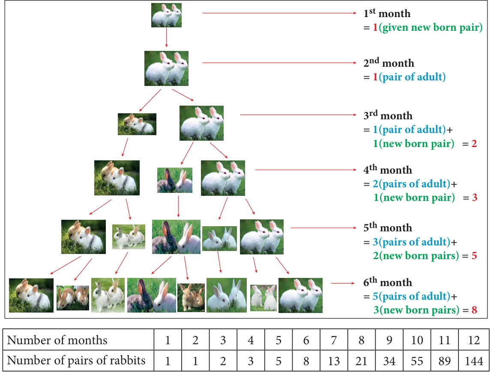

We have learnt in earlier classes, on how all beautiful things in nature as well as man made things are connected with Mathematics. Now, we just refresh everyone's memory and show how Math can be beautiful when seen in physical and biological things everywhere around us.
Fibonacci (real name Leonardo Bonacci) was an Italian mathematician who developed the Fibonacci Sequence. Remember the pattern of the Fibonacci sequence we already studied in standard VI it looks like this: 1, 1, 2, 3, 5, 8, 13, 21, 34... and it goes on.
Let us tabulate the Fibonacci sequence and find a rule.
| Term (n) | 1 | 2 | 3 | 4 | 5 | 6 | 7 | 8 | 9 | 10 | 11 | 12 | 13 | 14 | 15 | ... |
|---|---|---|---|---|---|---|---|---|---|---|---|---|---|---|---|---|
| F (n) | 1 | 1 | 2 | 3 | 5 | 8 | 13 | 21 | 34 | 55 | 89 | 144 | 233 | 377 | 610 | ... |
We observe that the 3rd term of the Fibonacci sequence is the sum of 2nd term and the 1st term.

That is, \(F(3) = F(2) + F(1)\) and so we can extend and write the rule is
\(F(n) = F(n-1) + F(n-2)\)
where \(F(n)\) is the \(n^{\text{th}}\) term
\(F(n-1)\) is the previous term to the \(n^{\text{th}}\) term
\(F(n-2)\) is the term before the \((n-1)^{\text{th}}\) term
This is how the Fibonacci Sequence is obtained. Let us learn more from the following real life examples.
Situation:
Let us look at the family tree of a male drone bee and a female bee as shown Fig 7.19. Here, female bees have 2 parents, male (drone) bees have just one parent, a female. (Male bee (drone) are produced by the queen's unfertilized eggs, so male(drone) bees only have a mother but no father!)

From the picture the following points are noted:
- The male Ⓐ has 1 parent, a female Ⓑ.
- The male Ⓐ has 2 grandparents Ⓒ, since his mother had parents Ⓒ, a male and a female.
- The male Ⓐ has 3 great-grandparents Ⓓ: since his grandmother has two parents but his grandfather has only one.
Now, answer, how many great-great-grandparents did the male Ⓐ have?
Let us try to find the relationship among the pattern of bees family by representing in the tabular form given below,
| Number of Ⓐ | Parents Ⓑ | Grandparents Ⓒ | Great Grandparents Ⓓ | Great- Great Grandparents Ⓔ | Great- Great-Great Grandparents Ⓕ |
|---|---|---|---|---|---|
| a Male bee (1) | 1 | 2 | 3 | 5 | 8 |
| a Female bee (1) | 2 | 3 | 5 | 8 | 13 |
We see the Fibonacci numbers 1, 1, 2, 3, 5, 8, 13… in the above table.
Note
The difference between two consecutive numbers of the Fibonacci sequence increase very quickly. ((For example \(F(5) - F(4) = 5 - 3 = 2\) ; \(F(10) - F(9) = 55 - 34 = 21\) ; \(F(15) - F(14) = 610 - 377 = 233\))(1, 1, 2, 3, 5, 8, 13, 21, 34, 55, 89, 144, 233, 377, 610, 987, 1597, 2584, 4181, 6765, 10946 ...))
Example 7.7
Given that one pair of new born rabbits they produce a new pair each month and from the second month, each new pair can breed themselves. Find how many pairs of rabbits are bred from one pair in a year, and find the relationship between the number of months and the number of pairs of rabbits by tabulation (a pair means (a male and a female)).
Solution:
The below picture clearly forms the sequence is 1,1,2,3,5,8... Here, we find the pattern in which each number is in the Fibonacci sequence, obtained by adding together with previous two. Going on like this to find subsequent numbers at the twelfth month, we will get 144 pairs of rabbits. In the other words, twelfth Fibonacci number is 144.
